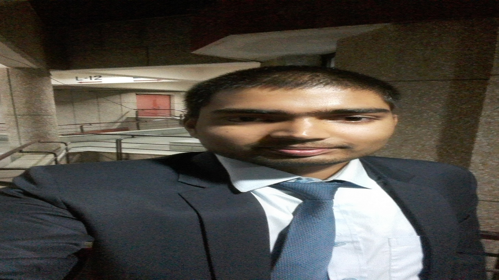

Hi, My name is Deepak Singh
This is my Home page
My name is Deepak Singh
M.Sc. Statistics
Department of Mathematics and Statistics, IITK
This is my home page

Hello, This is Deepak Singh, Student M.Sc. Statistics I.I.T. Kanpur. I am from Deoria district of Uttar Pardesh. I have completed my metric from A.R.D. Intermediate college Babhni, Deoria,U.P.
I have completed my intermediate from CRTSVMIC Siswa Khurd Siswa Bazar Maharaj Ganj, U.P. and done my B.Sc. (Hons.) in Statistics from Banaras Hindu University, Varanasi, Uttarn Pardesh
- metric From ARD Intermediate college
- Intermediate from CRTSVMIC
- B.Sc. From BHU Varanasi